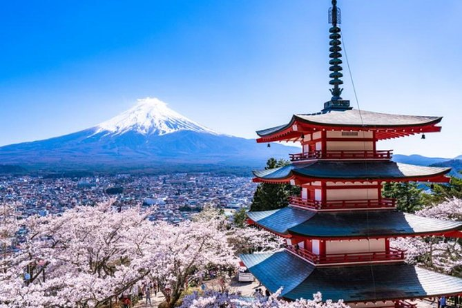
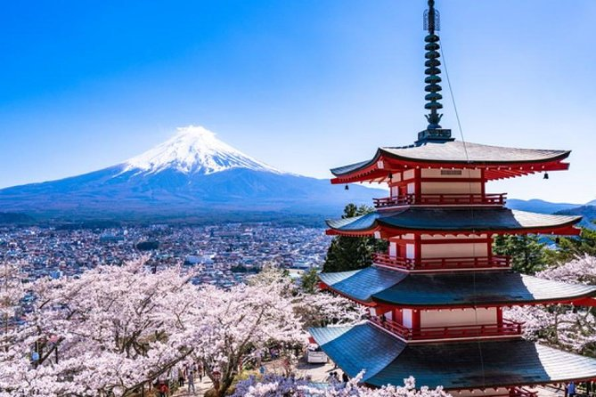

Located in Fuji-Hakone-Izu National Park, Mount Fuji is a symbol of Japan. The mountain contributes to Japan's physical, cultural, and spiritual geography. Standing at 3,776 meters (12,380 feet). It is an active volcano, sitting on a "triple junction" of tectonic activity. Being the Mount Fuji is the single most popular tourist site in Japan, for both Japanese and foreign tourists. More than 200,000 people climb to the summit every year, mostly during the warmer summer months. "Huts" on the route up the mountain cater to climbers, providing refreshments, basic medical supplies, and room to rest. Many people start climbing Mount Fuji at night, as better to experience sunrise from the summit—Japan, after all, is nicknamed "the Land of the Rising Sun." The sunrise from Mount Fuji has a special name, Goraiko. The best way to get to the location of Mount Fuji is to book a flight in Manila Airport to Central Japan International Airport. This cost roughly around PHP 4,500 - PHP 13,000 with a an eta of 4 hours and 15 minutes. After that you ride ride a train from Meitetsu Ltd Express, a railway express. to Meitetsunagoya costing roughly around PHP 310 - 360. You then travel to Nagoya and ride another train costing around PHP 2,700-PHP 3,900.
Miyajima is famous for the Itsukushima Shrine (厳島神社, Itsukushima-jinja) which is a Shinto shrine. It is known for its "floating" torii gate. The historic shrine complex is listed as a UNESCO World Heritage Site, as well as one of the National Treasures by the Japanese government. Just a short ferry ride from mainland Hiroshima is the island of Miyajima, famous the world over as Japan's Shrine Island. Covering an area of 30 square kilometers in Hiroshima Bay, Miyajima is best known as the home of the Itsukushima Shrine, a Shinto temple dedicated to the Princess daughters of the wind god Susanoo. Another notable feature is the shrine's stage, where visitors are entertained with traditional dances and musical performances. Also worth exploring are the island's exquisite grounds and gardens, home to wild deer and numerous bird colonies.
{kind=link}
{kind=link}
{kind=link}